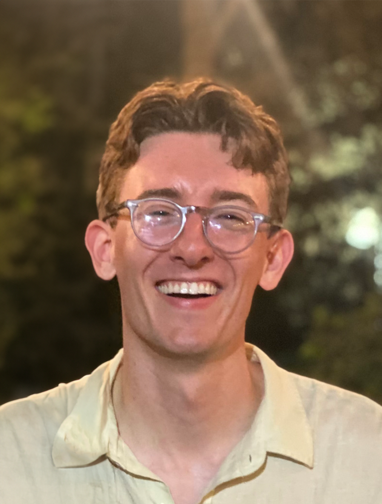

Micah Olivas
mbolivas [at] stanford.edu
Hi! I’m a fourth-year Genetics PhD student studying enzyme evolution at Stanford University. I am a member of Polly Fordyce's group in the Departments of Genetics and Bioengineering, and Sarafan ChEM-H. I am grateful to be supported by a NRSA F31 fellowship from the National Human Genome Research Institute.
In my research, I apply high-throughput microfluidics platforms to dissect how enzymatic properties like allosteric regulation, substrate specificity, and thermostability are encoded in the amino acid sequences of natural proteins. Through this work, I hope to improve sequence-to-function prediction in both natural and engineered proteins.
Here are my Google Scholar, Twitter, Github, and CV.
Current Research Interests
- High-throughput assay development for kinetic measurements of proteins
- Connecting statistical coupling from enzyme phylogenies with energetic coupling in structures
- Evolutionary conservation of catalytic mechanisms
News
- August 2023 I had a great time presenting my work on characterizing designed acylphosphatases at the Current Issues in Genetics (CIG) seminar series in the Stanford Genetics Department.
- July 2023 I'm very grateful to receive a NRSA F31 fellowship from the National Human Genome Research Institute to support my research on sequence-to-function relationships in enzymes!
- December 2022 During the NeurIPS Learning Meaningful Representations of Life workshop Clara Wong-Fannjiang and I presented our work on using protein language models to enhance thermostability and activity of acylphosphatases (Poster).
- September 2022 At this year's Genetics Department retreat, I presented a strategy to characterize a large library of enzymes designed by a newly-described protein language model (PDF).
- November 2021 I passed my qualifying exam in the Genetics Department!
- September 2021 I presented my rotation project in the Fordyce lab, in which I generated high-throughput kinetic measurements of human acylphosphatases (PDF) at the Stanford Genetics Department Retreat.
- July 2021 I am thrilled to join Polly Fordyce's group in the Departments of Genetics and Bioengineering! I will continue to work with the high-throughput enzymology team on a project I started at the beginning of my rotation in May.
- April 2021 After spending the winter quarter with Serena Sanulli's group, I will be moving on to another rotation with Polly Fordyce's group. It was great witness the formative weeks of Serena's lab at Stanford.
- February 2021 My rotation in the Steinmetz Lab has come to an end. I had a great time working on the TAP-seq pipeline with Andreas Gschwind, Dan Schraivogel, and others.
- May 2020 I was awarded a graduate fellowship from the Honor Society of Phi Kappa Phi!
- April 2020 After a round of socially-distanced interviews, I accepted an offer to join 23andMe Therapeutics as a Target Biology Intern for the summer.
- March 2020 New work on pooled CRISPR screens in an organoid model of lung cancer is out now in Nature! We demonstrate that "3D" spheroid cultures of lung adenocarcinoma resolve phenotypic effects that otherwise complicate screens of cells from 2D monoloayer culture, and identify genes implicated in tumor growth regulation.
-
-
Papers
Papers
2020
CRISPR screens in cancer spheroids identify 3D growth-specific vulnerabilities. (pdf)
Kyuho Han, Sarah E. Pierce, Amy Li, Kaitlyn Spees, Gray R. Anderson, Jose A. Seoane, Yuan-Hung Lo, Michael Dubreuil, Micah Olivas, Roarke A. Kamber, Michael Wainberg, Kaja Kostyrko, Marcus R. Kelly, Maryam Yousefi, Scott W. Simpkins, David Yao, Keonil Lee, Calvin J. Kuo, Peter K. Jackson, Alejandro Sweet-Cordero, Anshul Kundaje, Andrew J. Gentles, Christina Curtis, Monte M. Winslow and Michael C. Bassik.
Nature 2020.
2018
PM2.5 Exposure and ROS Production in NR8383 Rat Alveolar Macrophages. (abstract)
Anthony Waterston, Joel Castillo, Micah Olivas, Alam Hasson, and Laurent Dejean.
Biophysical Society 2018.
-
Posters
Posters